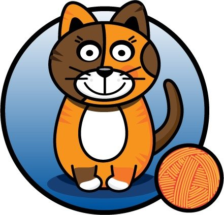
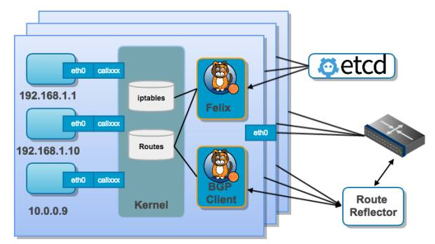

Calico 插件
Calico 原意为”有斑点的“，如果说一只猫为 calico cat 的话，就是说这是只花猫，也叫三色猫，所以 calico 的 logo 是只三色猫

概念
Calico创建和管理一个 扁平的三层 网络（不需要overlay），每个容器会分配一个 可路由的IP
由于通信时不需要解包和封包，网络性能损耗小，易于排查，且易于水平扩展
小规模部署时可以通过 BGP client 直接互联，大规模下可通过指定的 BGP Route Reflector 来完成
这样保证所有的数据流量都是通过IP路由的方式完成互联的
Calico基于 iptables 还提供了丰富而灵活的网络Policy，保证通过 各个节点上的ACL 来提供 Workload的多租户隔离 、 安全组 以及其他 可达性限制 等功能
架构

Calico主要由下面几个组件组成：
- Etcd：负责存储网络信息
- BGP client：负责将Felix配置的 路由信息 分发 到其他节点
- Felix：Calico Agent，每个节点都需要运行，主要负责 配置路由 、 配置ACLs 、 报告状态
- BGP Route Reflector：大规模部署时需要用到，作为 BGP client的中心连接点 ，可以避免每个节点互联
部署
运行下面的命令可以部署 calico 网络：
mkdir /etc/cni/net.d/ kubectl apply -f https://docs.projectcalico.org/v3.0/getting-started/kubernetes/installation/rbac.yaml wget https://docs.projectcalico.org/v3.0/getting-started/kubernetes/installation/hosted/calico.yaml # 修改etcd_endpoints的值和默认的192.168.0.0/16(不能和已有网段冲突) kubectl apply -f calico.yaml wget https://github.com/projectcalico/calicoctl/releases/download/v2.0.0/calicoctl mv calicoctl /usr/loca/bin && chmod +x /usr/local/bin/calicoctl export CALICO_DATASTORE_TYPE=kubernetes export CALICO_KUBECONFIG=~/.kube/config calicoctl get ippool calicoctl get node
如果安装时启用应用层策略的话还需要安装 istio